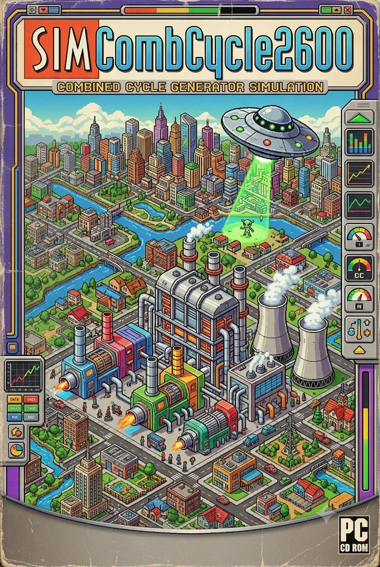

Fire up a gas turbine, recover the waste heat, roll a steam turbine — and keep a whole city lit. An educational plant-operator sim with real formulas underneath.
A stylized physics toy, not a literal cross-section — it mirrors your plant's real state: load, fouling, and health. Left running long enough at critical health, a chamber can fail catastrophically and scorch permanently until rebuilt.
Most jobs need the affected unit off line first. Work advances only while the sim runs.
Your plant is the city's main generator. Demand follows daily life: a morning ramp as people wake, an evening peak as lights, cooking and air-conditioning stack up, and a quiet valley overnight. Hot afternoons add air-conditioning load. Electricity price rises and falls with that demand — a merchant plant earns most by being on line and efficient during the peaks.
A combined-cycle plant is two heat engines stacked in series so that the waste heat of the first becomes the fuel of the second:
1 · Gas turbine (Brayton cycle). A compressor squeezes air to ~20× atmospheric pressure, fuel burns in it at ~1,400 °C, and the hot gas spins a turbine that drives both the compressor and generator G1. Its exhaust leaves at about 630 °C — far too hot to throw away.
2 · Heat-recovery steam generator (HRSG). The exhaust flows over kilometres of water-filled tube banks, boiling water into high-pressure steam — a boiler with no flame of its own.
3 · Steam turbine (Rankine cycle). That steam expands through the steam turbine, spinning generator G2, then condenses back to water in the condenser and is pumped around again.
Energy that a simple gas turbine would blow out its stack instead produces roughly 50 % more electricity for zero extra fuel. That is why combined cycle is the most efficient way we have to make electricity from fuel.
Thermal efficiency is simply useful work out over heat in:
When two cycles are stacked, the bottoming cycle only sees the heat the topping cycle rejected, so the combined efficiency is:
Power engineers usually quote the inverse, the heat rate — fuel energy needed per kWh generated (1 kWh = 3,412 Btu):
No heat engine can beat the Carnot limit, set by the absolute temperatures (in kelvin, K = °C + 273) that it works between:
This one formula explains most of what you do as an operator:
· Raising Thot (better blade alloys and cooling → hotter firing) is why modern turbines beat old ones.
· Lowering Tcold is your cooling tower's job — colder condensing water means a deeper condenser vacuum and more work squeezed from every kilogram of steam.
· On a hot day both ends get worse at once: intake air is thinner (less mass through the gas turbine) and the cooling tower can't cool as low. That's why output sags in a heat wave — exactly when the city wants power most.
| State | What is happening — and why it exists |
|---|---|
| Offline — cold / warm / hot | How much heat the machine still holds. Metal cools over hours, so a restart within ~8 h ("hot") skips most of the warm-up a cold start needs. Startup speed is limited by how fast thick metal may be reheated. |
| Purge | The starter motor spins the unfired turbine so fresh air sweeps several complete volumes through the gas path and HRSG, flushing out any leaked fuel before a spark is allowed. Skipping it has destroyed real HRSGs. |
| Ignition | Fuel is admitted at a small, precise flow and igniters fire it. Too little and the flame blows out; the control system watches flame detectors continuously. |
| Acceleration | Fuel increases and the machine accelerates itself to 3,600 rpm — the speed that makes a 2-pole generator produce exactly 60 Hz. |
| FSNL | "Full speed, no load" — spinning at grid frequency with the breaker still open, making no power, ready to synchronize. |
| Synchronized | The breaker is closed with frequency, voltage and phase matched to the grid. The generator is now locked in step with every other machine on the interconnection. |
| Loading / on line | More fuel now becomes electrical power instead of speed. Ramp rate is limited to protect thick components from thermal stress. |
| Combined cycle | HRSG making steam, steam turbine synchronized — the full 58 %-efficient configuration. |
| Duct firing | Extra burners inside the HRSG boost steam output for peak hours — more MW, at a worse heat rate. |
| Shutdown / cooldown | Load is ramped off before breakers open, then the machine coasts down and cools for hours. The HRSG's stored heat decides whether your next start is hot, warm or cold. |
| Tripped / lockout | A protection system stopped the unit instantly (flameout, overspeed, loss of vacuum…). Alarms must be reset before restarting — after the cause is understood. |
| ☠ Wrecked | A rare, permanent outcome of running a component at critical health under stress — the failure destroys hardware rather than just tripping a breaker. Only a full rebuild in Maintenance restores it. See "Catastrophic failure" below. |
Natural gas piping runs right up to the combustor. If a valve seeps while the unit is down, fuel can pool inside the turbine, the exhaust duct and the huge HRSG casing. Introduce a spark into that mixture and the result is not ignition but an explosion — purge-related HRSG explosions have wrecked real plants.
So an interlock forces the starter to spin the unfired machine and blow fresh air through the whole gas path first. Codes require several complete volume changes:
In the simulator the Ignite button stays locked until purge completes — the same interlock a real control system enforces. It is one of the few steps where slower is simply safer.
The grid is millions of machines all spinning in lock-step at 60 Hz. Closing your breaker connects your rotor to all of them rigidly, through magnetic fields. Three things must match at that instant: frequency, voltage, and phase angle (whether your voltage wave peaks at the same moment as the grid's).
Close the breaker badly out of phase and the grid yanks the rotor into step in a fraction of a second — torques many times rated can twist shafts and rip generator windings. The synchroscope needle shows the phase difference rotating slowly (its speed is your frequency error); the operator closes as the needle drifts through 12 o'clock. Most plants use an auto-synchronizer, with the human watching — try both in the simulator.
Steam drums, headers and turbine rotors are steel up to ~15 cm thick. Heat one surface quickly and the inside lags behind; the hot layer tries to expand while the cold core holds it back. That internal tug-of-war is thermal stress:
Each aggressive warm-up spends a little of the metal's fatigue life. It never heals; enough cycles and cracks start. This is why:
· Drum warm-up is held to a few °C per minute — in the sim, hold the GT at low load until the drum is warm, or watch HRSG health tick away.
· Starts are classified hot / warm / cold: a hot machine has small ΔT to close, so it may load fast; a cold one must crawl.
· The Fast ramp setting earns peak-price money but charges it to component life. Real operators make exactly this trade.
Steam leaving the turbine is condensed on tubes full of cool circulating water. When steam collapses into liquid it shrinks ~1,000×, so the condenser naturally pulls a strong vacuum — typically ~5 kPa absolute (about 95 % below atmosphere).
The vacuum matters because the turbine extracts work from steam all the way down to condenser pressure. Colder cooling water → lower condensing temperature → lower back-pressure → more work per kilogram of steam (it's the Tcold in Carnot's formula).
Starve the condenser of cooling (too few fans, fouled tubes, a scorching day) and pressure creeps up: first the steam turbine loses output, then a protective low-vacuum trip slams it off line before the long last-stage blades are damaged by hot, dense steam.
CO₂ is fixed chemistry: burn the fuel, get the carbon. For natural gas:
NOₓ forms when combustion is hot enough to make airborne nitrogen react with oxygen — it drives smog and acid rain. The SCR (selective catalytic reduction) in the HRSG injects ammonia over a catalyst:
Nothing in the plant fails all at once; everything drifts:
· Compressor fouling — air isn't clean; a film on the blades costs capacity and efficiency. Washes recover it (online = small sip, offline = full recovery).
· Inlet filters load up with dust; pressure drop throttles the compressor.
· Hot-gas-path parts creep and crack at 1,400 °C; each fired hour and especially each start and trip consumes life. Industry counts equivalent operating hours: one start ≈ 10–20 h, one trip ≈ many more.
· HRSG tubes fatigue with thermal cycling; condenser tubes foul and pinch the vacuum; cooling-tower fill scales up.
Maintenance buys the health back with money and downtime. The operator's puzzle: schedule outages for cheap-price hours, before a forced outage schedules itself during the peak.
Every trip in this simulator is normally recoverable: a protection system stops the unit before something breaks, you fix the cause, reset alarms, and start again. But real plants have a second category of event — one where the protection didn't act fast enough, or the equipment was already too far gone for the trip to matter. Push a component's health to single digits and keep running it anyway, and the simulator can hand you one of these instead of an ordinary trip. They are rare on purpose, and permanent on purpose — the "dead battery" edge of an otherwise forgiving game.
Uncontained turbine failure. A spinning rotor stores kinetic energy:
This is why opening the breaker on a heavily loaded, badly worn machine is dangerous: with the electrical load gone, all that fuel energy goes into pure acceleration instead — an overspeed event — precisely when the metal has the least margin left.
Compressor surge deflagration. A badly fouled or blocked inlet can stall the compressor's airflow mid-start. Fuel already committed to the combustor has nowhere productive to go — instead of a clean flame front, it can flash back through the casing. Real gas turbines have surge-limit control for exactly this reason; in the simulator it only becomes likely once filter ΔP or fouling is left past ~85%.
HRSG tube rupture. Warming the drum faster than its safe rate over and over fatigues the metal (see thermal stress, above). Water held above 100 °C stays liquid only because it's under pressure; if a fatigued tube lets go, that superheated water flashes to steam almost instantly:
Condenser vacuum collapse. A condenser shell is built to hold a strong vacuum against atmospheric pressure pushing in — about 100 kPa of differential across a large thin structure. Fouling and cavitation damage thin that shell over time; push the vacuum to its worst while the shell is already critically weakened, and the pressure differential can cave it in rather than merely trip the turbine on low vacuum.
Every one of these has the same real lesson: the health meters in Maintenance are not cosmetic. A component below 25% isn't "still working, just needs a wash sometime" — it's on borrowed time, and the ordinary trip that usually saves you is no longer guaranteed to. A wrecked component shows scorched and dark in the cutaway view and the schematic, is locked out of every normal work order, and needs a full rebuild — far slower and far more expensive than the maintenance that would have prevented it.
A merchant plant sells energy at the market price and buys fuel. Ignoring fixed costs, each hour's margin is:
Break-even: with a 6,000 Btu/kWh heat rate and gas at $3.50/MMBtu, fuel alone costs 6,000 × 3.50 / 1000 = $21 per MWh. Below that price you lose money on every megawatt — sometimes the right move is to shut down and wait for the evening peak. But a start costs fuel, wear and time too… which is the whole game.
| MW / MWh | Megawatt = a rate of energy flow (1 MW ≈ 800 homes); megawatt-hour = that rate held for an hour. |
| MMBtu | Million British thermal units — the unit fuel is bought in. 1 MWh of heat = 3.412 MMBtu. |
| LHV | Lower heating value — fuel energy not counting the heat locked in exhaust water vapor; the honest basis for efficiency. |
| FSNL | Full speed, no load — at 3,600 rpm, breaker open. |
| HRSG | Heat-recovery steam generator — the flameless boiler in the exhaust. |
| Drum | Thick steel vessel where boiling water and steam separate; its metal temperature limits warm-up speed. |
| Back-pressure | Pressure at the steam turbine exhaust — lower (deeper vacuum) means more output. |
| Trip | Automatic emergency shutdown by a protection system. |
| Baseload / peaking | Running steadily at rating vs. starting up just for high-price hours. |
| Aux (house) load | Power the plant itself consumes — pumps, fans, controls. Net = gross − aux. |